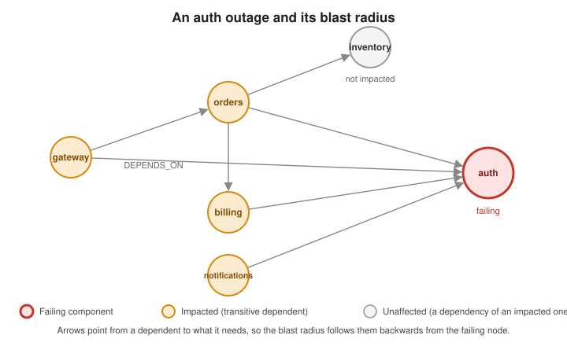

Dependency & Impact Analysis
|
This content was generated with the assistance of AI and should be verified against the official documentation before being relied on in production. |
When something breaks in a system made of many services, the first two questions are always the same: what else is going to break? and what is the common cause? Both are questions about a graph of dependencies, and a graph database answers them with one traversal each. This page builds a small impact-analysis service with Spring Boot: a model of services, databases, queues and hosts, the queries for blast radius and root-cause candidates, the two GDS algorithms that find single points of failure and dependency cycles, and the import that keeps the graph current. The mapping basics are in Spring Data Neo4j, and the project, run and drop lifecycle of the GDS calls is in Calling GDS from Spring Boot; neither is repeated here.
Problem
A service dependency graph answers three related but different questions, each needing a different technique over the same graph:
-
Blast radius. Given a component that just started failing, which services will eventually break? That is every service that transitively depends on it, found with a variable-length traversal followed upstream.
-
Root-cause candidates. Given several services that are failing at the same time, which component do they all depend on? The candidate is a common downstream dependency that is not itself reported as failing yet.
-
Structural risk. Which component sits on the most dependency paths (a single point of failure), and are there dependency cycles that make independent deployment or rollback unsafe? These are Betweenness Centrality and Strongly Connected Components over the whole graph.
The scenario, its small services dataset and the algorithms are described in the
Root-cause and
dependency analysis section of the Neo4j reference, and the algorithms in
Pathfinding and Centrality Algorithms and
Community Detection Algorithms. This page implements them
in a Spring Boot service and reuses the same dataset: gateway, auth, orders, inventory, billing and
notifications, with gateway depending on auth and orders, orders on auth, inventory and billing,
billing on auth, and notifications on auth.
Graph model
The graph has four kinds of node. A Service is a deployable unit; a Database and a Queue are the stateful
resources services depend on; a Host is where a service runs. DEPENDS_ON points from the dependent to the
thing it needs, and RUNS_ON from a service to its host, so "who is affected" is always a traversal against the
arrows.

The blast radius of the figure is the set of nodes from which the failing node can be reached:
The Java model (the entity is called ServiceNode so that it does not clash with the @Service stereotype) uses the mapping annotations of the
Spring Data Neo4j page. The service name is the natural,
application-assigned identifier, so there is no generated id to leak into the API; nodes that the application does
not create (databases, queues, hosts) get the same treatment:
import java.util.ArrayList;
import java.util.List;
import org.springframework.data.neo4j.core.schema.Id;
import org.springframework.data.neo4j.core.schema.Node;
import org.springframework.data.neo4j.core.schema.Property;
import org.springframework.data.neo4j.core.schema.Relationship;
import org.springframework.data.neo4j.core.schema.Relationship.Direction;
@Node("Service")
public class ServiceNode {
@Id
private final String name;
private String owner;
@Relationship(type = "DEPENDS_ON", direction = Direction.OUTGOING)
private List<DependencyLink> dependsOn = new ArrayList<>();
@Relationship(type = "DEPENDS_ON", direction = Direction.OUTGOING)
private List<Database> databases = new ArrayList<>();
@Relationship(type = "DEPENDS_ON", direction = Direction.OUTGOING)
private List<Queue> queues = new ArrayList<>();
@Relationship(type = "RUNS_ON", direction = Direction.OUTGOING)
private List<Host> hosts = new ArrayList<>();
public ServiceNode(String name) {
this.name = name;
}
public String getName() {
return name;
}
public String getOwner() {
return owner;
}
public void setOwner(String owner) {
this.owner = owner;
}
public List<DependencyLink> getDependsOn() {
return dependsOn;
}
public List<Database> getDatabases() {
return databases;
}
public List<Queue> getQueues() {
return queues;
}
public List<Host> getHosts() {
return hosts;
}
}
@Node("Database")
public class Database {
@Id
private final String name;
@Property("engine")
private String engine;
public Database(String name) {
this.name = name;
}
public String getName() {
return name;
}
}
@Node("Queue")
public class Queue {
@Id
private final String name;
public Queue(String name) {
this.name = name;
}
public String getName() {
return name;
}
}
@Node("Host")
public class Host {
@Id
private final String name;
private String region;
public Host(String name) {
this.name = name;
}
public String getName() {
return name;
}
}The classes follow the mapping rules of
Spring Data Neo4j — Metadata based mapping.
A dependency between two services can carry data of its own (is the call synchronous, how critical is it), which
is what a relationship properties class is for. The target service is annotated with @TargetNode:
import org.springframework.data.neo4j.core.schema.RelationshipProperties;
import org.springframework.data.neo4j.core.schema.TargetNode;
@RelationshipProperties
public class DependencyLink {
@TargetNode
private final ServiceNode target;
private final String kind; // "sync" or "async"
private final String criticality; // "hard" or "soft"
public DependencyLink(ServiceNode target, String kind, String criticality) {
this.target = target;
this.kind = kind;
this.criticality = criticality;
}
public ServiceNode getTarget() {
return target;
}
public String getKind() {
return kind;
}
public String getCriticality() {
return criticality;
}
}See Spring Data Neo4j — Mapping
for @Relationship, @RelationshipProperties and @TargetNode. The same relationship type can be mapped by
several fields as long as their target types differ, which is how DEPENDS_ON reaches a service, a database or a
queue. The analytics below do not go through these entities at all: they traverse the graph with Cypher and
project it into GDS, so the entities serve the import and the catalog-style reads, and a loaded Service is never
asked to follow DEPENDS_ON recursively (a cyclic graph would make that traversal a hazard, see
the pitfalls).
Schema
Spring Data Neo4j does not create constraints. The names are looked up on every import and every analytics call, so
each label gets a uniqueness constraint, which also creates the backing index. An ApplicationRunner creates them at
startup; IF NOT EXISTS makes it idempotent:
import org.springframework.boot.ApplicationArguments;
import org.springframework.boot.ApplicationRunner;
import org.springframework.data.neo4j.core.Neo4jClient;
import org.springframework.stereotype.Component;
@Component
public class DependencySchema implements ApplicationRunner {
private static final List<String> STATEMENTS = List.of(
"CREATE CONSTRAINT service_name IF NOT EXISTS FOR (s:Service) REQUIRE s.name IS UNIQUE",
"CREATE CONSTRAINT database_name IF NOT EXISTS FOR (d:Database) REQUIRE d.name IS UNIQUE",
"CREATE CONSTRAINT queue_name IF NOT EXISTS FOR (q:Queue) REQUIRE q.name IS UNIQUE",
"CREATE CONSTRAINT host_name IF NOT EXISTS FOR (h:Host) REQUIRE h.name IS UNIQUE");
private final Neo4jClient client;
public DependencySchema(Neo4jClient client) {
this.client = client;
}
@Override
public void run(ApplicationArguments args) {
STATEMENTS.forEach(statement -> client.query(statement).run());
}
}See Cypher manual — Managing constraints
and Indexes and Constraints. Because the constraint also makes
MERGE safe under concurrent imports, a Kafka listener and a scheduled catalog sync can write at the same time
without creating duplicate services. In production, prefer a migration tool over a startup runner so that schema
changes are versioned.
Writes
The graph is written from the outside world: a deployment event says that a service now depends on a set of other
components and runs on a host, and a catalog export lists everything. In both cases the natural write is one
parameterised UNWIND … MERGE, so that re-delivering the same input changes nothing:
import java.util.List;
import java.util.Objects;
public record DependencyDeclaration(String service, String owner, String host, List<String> services,
List<String> databases, List<String> queues) {
public DependencyDeclaration {
Objects.requireNonNull(service, "service");
Objects.requireNonNull(host, "host");
services = services == null ? List.of() : List.copyOf(services);
databases = databases == null ? List.of() : List.copyOf(databases);
queues = queues == null ? List.of() : List.copyOf(queues);
}
}An event deserialised from JSON can omit any field. The compact constructor turns a missing list into an empty one
(no dependencies of that kind), and rejects a declaration without a service or a host at once, so that a malformed
event fails in deserialisation and goes to the listener’s error handling instead of half-applying. owner may be
null, and the importer below passes it through a map that accepts null values.
@Service
public class DependencyImporter {
private final Neo4jClient client;
public DependencyImporter(Neo4jClient client) {
this.client = client;
}
@Transactional
public void apply(DependencyDeclaration declaration) {
var serviceParameters = new HashMap<String, Object>(); // Map.of rejects the null owner
serviceParameters.put("service", declaration.service());
serviceParameters.put("owner", declaration.owner());
client.query("""
MERGE (s:Service {name: $service})
SET s.owner = $owner
WITH s
OPTIONAL MATCH (s)-[stale:DEPENDS_ON]->()
DELETE stale
""")
.bindAll(serviceParameters)
.run();
client.query("""
MATCH (s:Service {name: $service})
UNWIND $services AS dependency
MERGE (d:Service {name: dependency})
MERGE (s)-[:DEPENDS_ON]->(d)
""")
.bindAll(Map.of("service", declaration.service(), "services", declaration.services()))
.run();
client.query("""
MATCH (s:Service {name: $service})
UNWIND $databases AS database
MERGE (d:Database {name: database})
MERGE (s)-[:DEPENDS_ON]->(d)
""")
.bindAll(Map.of("service", declaration.service(), "databases", declaration.databases()))
.run();
client.query("""
MATCH (s:Service {name: $service})
UNWIND $queues AS queue
MERGE (q:Queue {name: queue})
MERGE (s)-[:DEPENDS_ON]->(q)
""")
.bindAll(Map.of("service", declaration.service(), "queues", declaration.queues()))
.run();
client.query("""
MATCH (s:Service {name: $service})
OPTIONAL MATCH (s)-[old:RUNS_ON]->()
DELETE old
WITH s
MERGE (h:Host {name: $host})
MERGE (s)-[:RUNS_ON]->(h)
""")
.bindAll(Map.of("service", declaration.service(), "host", declaration.host()))
.run();
}
}The declaration is the whole truth about one service, so the importer first removes the dependency edges the
service no longer declares and then re-creates the current ones; a dependency that was dropped from the
service’s configuration disappears from the graph instead of lingering as a phantom edge that inflates every blast
radius. A dependency target that has not been declared yet is created by the MERGE as a bare node, and filled in
when its own declaration arrives. See
Cypher manual — MERGE and
Cypher manual — UNWIND.
From deployment events
When each deployment publishes a message with the service’s declared dependencies, a listener keeps the graph current with no polling. The consumer configuration, the acknowledgement modes and the retry and dead-letter behaviour are described in Messaging with Kafka; the listener itself is only a thin adapter:
import org.springframework.kafka.annotation.KafkaListener;
import org.springframework.stereotype.Component;
@Component
public class DeploymentEventListener {
private final DependencyImporter importer;
public DeploymentEventListener(DependencyImporter importer) {
this.importer = importer;
}
@KafkaListener(topics = "${dependencies.topic:service-deployments}", groupId = "dependency-graph")
public void onDeployment(DependencyDeclaration declaration) {
importer.apply(declaration);
}
}See Spring for Apache Kafka — @KafkaListener Annotation.
Because apply is idempotent, at-least-once delivery and replays of the topic are harmless; the order of events
for one service matters, so key the messages by service name to keep a service’s events on one partition.
From a service catalog
Where a catalog (a developer portal, a Kubernetes inventory, a configuration repository) is the source of truth, a scheduled job reads the whole catalog and applies every declaration. ShedLock makes sure only one instance of a scaled-out application runs it, as explained in Scheduling and ShedLock:
import net.javacrumbs.shedlock.spring.annotation.SchedulerLock;
import org.springframework.scheduling.annotation.Scheduled;
@Component
public class CatalogSyncJob {
private final ServiceCatalogClient catalog;
private final DependencyImporter importer;
public CatalogSyncJob(ServiceCatalogClient catalog, DependencyImporter importer) {
this.catalog = catalog;
this.importer = importer;
}
@Scheduled(cron = "${dependencies.sync.cron:0 */15 * * * *}")
@SchedulerLock(name = "dependency-catalog-sync", lockAtMostFor = "PT10M", lockAtLeastFor = "PT30S")
public void sync() {
catalog.fetchAll().forEach(importer::apply);
}
}See ShedLock and
Spring Framework — Task Execution and Scheduling.
ServiceCatalogClient is whatever HTTP client the catalog needs (see REST
APIs). A catalog sync is also the place to reconcile: services that no longer appear in the catalog can be
flagged (SET s.retired = true) and excluded from the analytics, rather than deleted, so that history queries
still resolve.
Queries and analytics
The queries fall into two groups. Blast radius and root-cause candidates are plain traversals that run on every
request; Betweenness and Strongly Connected Components are whole-graph GDS calls. All of them go through
Neo4jClient and map rows to records.
Blast radius
The traversal follows DEPENDS_ON against its direction, from the failing component to everything that needs it,
and reports each impacted service once with its distance (how many dependency hops separate it from the failure):
public record ImpactedService(String name, long distance) {
}
@Service
public class ImpactQueries {
private static final int MAX_DEPTH_LIMIT = 20;
private final Neo4jClient client;
public ImpactQueries(Neo4jClient client) {
this.client = client;
}
@Transactional(readOnly = true)
public List<ImpactedService> blastRadius(String failing, int maxDepth) {
int depth = Math.max(1, Math.min(maxDepth, MAX_DEPTH_LIMIT));
// The bound is an int clamped in code, so formatting it into the statement is safe.
var statement = """
MATCH path = (impacted:Service)-[:DEPENDS_ON*1..%d]->(failing:Service|Database|Queue {name: $name})
RETURN impacted.name AS name, min(length(path)) AS distance
ORDER BY distance, name
""".formatted(depth);
return client.query(statement)
.bind(failing).to("name")
.fetchAs(ImpactedService.class)
.mappedBy((typeSystem, record) -> new ImpactedService(
record.get("name").asString(), record.get("distance").asLong()))
.all()
.stream()
.toList();
}
}A variable-length pattern follows each relationship at most once per path, so a cyclic dependency graph does not
make the traversal loop, but the number of paths can still grow quickly in a densely connected graph. The upper
bound on the length (*1..N) keeps the cost predictable and expresses a business rule ("beyond N hops the failure
is no longer interesting"); because a Cypher pattern bound cannot be a parameter, the code clamps the value to an
integer range and formats it in, which is the only case in this section where a value goes into the statement text.
The label expression Service|Database|Queue lets the failing component be a database or a queue as well as a
service. For the dataset of the Neo4j page, auth gives gateway, orders, billing and notifications, with
all four one hop away, because each declares auth as a direct dependency; inventory is not
impacted by an auth outage because it is a dependency of orders, not a dependent. See
Cypher manual — Variable-length patterns.
Since the impacted services also carry an owner and run on hosts, the same traversal can answer operational questions: whom to notify, and how many hosts are in play.
public record ImpactedOwner(String owner, long services) {
}
@Transactional(readOnly = true)
public List<ImpactedOwner> impactedOwners(String failing) {
return client.query("""
MATCH (impacted:Service)-[:DEPENDS_ON*1..20]->(:Service|Database|Queue {name: $name})
WITH DISTINCT impacted
RETURN coalesce(impacted.owner, 'unowned') AS owner, count(impacted) AS services
ORDER BY services DESC, owner
""")
.bind(failing).to("name")
.fetchAs(ImpactedOwner.class)
.mappedBy((typeSystem, record) -> new ImpactedOwner(
record.get("owner").asString(), record.get("services").asLong()))
.all()
.stream()
.toList();
}Root-cause candidates
When several services alert at the same time, the cause is often something they share. The query starts from the
failing set, follows DEPENDS_ON downstream, and ranks the components that are reachable from the failing services
by how many of them reach it, excluding the components that are themselves failing:
public record RootCauseCandidate(String name, long affectedServices) {
}
@Transactional(readOnly = true)
public List<RootCauseCandidate> rootCauseCandidates(List<String> failing, int limit) {
return client.query("""
MATCH (symptom:Service) WHERE symptom.name IN $failing
MATCH (symptom)-[:DEPENDS_ON*1..20]->(candidate:Service|Database|Queue)
WHERE NOT candidate.name IN $failing
RETURN candidate.name AS name, count(DISTINCT symptom) AS affected
ORDER BY affected DESC, name
LIMIT $limit
""")
.bind(failing).to("failing")
.bind(limit).to("limit")
.fetchAs(RootCauseCandidate.class)
.mappedBy((typeSystem, record) -> new RootCauseCandidate(
record.get("name").asString(), record.get("affected").asLong()))
.all()
.stream()
.toList();
}With gateway, orders, billing and notifications all reporting errors, auth heads the list with four
affected services: every one of them depends on it, directly or through orders. inventory comes after it with
two, because orders depends on it directly and gateway reaches it through orders. The result is a ranked list of suspects, not a verdict: a component
that all symptoms share is the likeliest cause, but a component that is itself healthy and merely shared, such as
a rarely failing library service, still needs the health data to be ruled out. Combine the ranking with the
metrics described in Metrics and Observability when
deciding where to look first. See
Cypher manual — Basic queries.
Critical components with Betweenness Centrality
A single point of failure is the component that sits on the most shortest dependency paths between other
components. Betweenness Centrality scores exactly that; the algorithm and its sampling parameters are explained in
Pathfinding and Centrality Algorithms. Because the
graph catalog is not transactional, the helper from
Calling GDS from Spring Boot scopes the
projection to a try block:
public record CriticalComponent(String name, double score) {
}
@Service
public class DependencyAnalytics {
private final Neo4jClient client;
private final GdsGraphs graphs;
public DependencyAnalytics(Neo4jClient client, GdsGraphs graphs) {
this.client = client;
this.graphs = graphs;
}
public List<CriticalComponent> criticalComponents(int limit) {
try (var graph = graphs.projectNative("dependencies",
List.of("Service", "Database", "Queue"),
Map.of("DEPENDS_ON", Map.of("orientation", "NATURAL")))) {
return client
.query("""
CALL gds.betweenness.stream($graph)
YIELD nodeId, score
RETURN gds.util.asNode(nodeId).name AS name, score
ORDER BY score DESC, name
LIMIT $limit
""")
.bind(graph.name()).to("graph")
.bind(limit).to("limit")
.fetchAs(CriticalComponent.class)
.mappedBy((typeSystem, record) -> new CriticalComponent(
record.get("name").asString(), record.get("score").asDouble()))
.all()
.stream()
.toList();
}
}
}The projection keeps the arrows (NATURAL orientation), so a path is a chain of dependencies in the direction in
which a call actually goes. In the dataset, orders sits between gateway and both inventory and billing, so
it has the highest score (2.0) and every other service has 0.0: an outage of orders is the one that cuts the
most paths. Note the difference with the blast radius: auth has the largest blast radius because everything needs
it, but Betweenness ranks orders first, because auth is the end of every path rather than an intermediate stop.
Both views matter, and an operator dashboard shows both. On a large graph, pass samplingSize and samplingSeed
in the configuration map to approximate the score; the full computation is expensive. The procedure is
gds.betweenness.stream, documented without a tier label in GDS 2026.10. See
GDS — Betweenness Centrality.
The helper creates a uniquely named projection per call and drops it in close(). Run this analytics on a
schedule, write the scores back with gds.betweenness.write and let the endpoint read the stored property, as
described in the async
and scheduled execution section and the memory guard in
estimating
before running. For a graph of a few thousand services the call is fast enough to run on demand.
|
Dependency cycles with Strongly Connected Components
A healthy dependency graph is acyclic. A cycle means two or more services depend on each other, directly or indirectly, and none of them can start, deploy or roll back independently. A strongly connected component with more than one member is exactly a cycle:
public record DependencyCycle(long componentId, List<String> services) {
}
public List<DependencyCycle> dependencyCycles() {
try (var graph = graphs.projectNative("cycles",
List.of("Service"),
Map.of("DEPENDS_ON", Map.of("orientation", "NATURAL")))) {
return client
.query("""
CALL gds.scc.stream($graph)
YIELD nodeId, componentId
WITH componentId, collect(gds.util.asNode(nodeId).name) AS services
WHERE size(services) > 1
RETURN componentId, services
ORDER BY componentId
""")
.bind(graph.name()).to("graph")
.fetchAs(DependencyCycle.class)
.mappedBy((typeSystem, record) -> new DependencyCycle(
record.get("componentId").asLong(),
record.get("services").asList(value -> value.asString())))
.all()
.stream()
.toList();
}
}The dataset of the Neo4j page is acyclic, so the call returns an empty list. Adding a single edge
(inventory)-[:DEPENDS_ON]->(gateway) creates the cycle gateway, orders, inventory, and the call then
reports those three services as one component. Only the membership of a component is meaningful: component ids
are not stable between runs, so the API should expose the list of services, and tests should assert on that list
and never on the id. The procedure is gds.scc.stream, documented without a tier label in GDS 2026.10; a
dependency-graph check is a good candidate for a CI step that fails a deployment when a new cycle appears. See
GDS — Strongly Connected Components.
Service and API
The REST layer is thin: it validates the input, calls one of the services above and returns records. Authorization is the usual one (see Spring Security): reading the graph is for engineers, and the import endpoints, if any, are for the platform account only. Endpoint design and error handling follow REST APIs.
import org.springframework.http.HttpStatus;
import org.springframework.web.bind.annotation.GetMapping;
import org.springframework.web.bind.annotation.PathVariable;
import org.springframework.web.bind.annotation.RequestMapping;
import org.springframework.web.bind.annotation.RequestParam;
import org.springframework.web.bind.annotation.RestController;
import org.springframework.web.server.ResponseStatusException;
@RestController
@RequestMapping("/api/dependencies")
public class DependencyController {
private final ImpactQueries queries;
private final DependencyAnalytics analytics;
public DependencyController(ImpactQueries queries, DependencyAnalytics analytics) {
this.queries = queries;
this.analytics = analytics;
}
@GetMapping("/{component}/blast-radius")
public List<ImpactedService> blastRadius(@PathVariable String component,
@RequestParam(defaultValue = "10") int maxDepth) {
return queries.blastRadius(component, maxDepth);
}
@GetMapping("/root-causes")
public List<RootCauseCandidate> rootCauses(@RequestParam List<String> failing,
@RequestParam(defaultValue = "5") int limit) {
if (failing.isEmpty()) {
throw new ResponseStatusException(HttpStatus.BAD_REQUEST, "At least one failing service is required");
}
return queries.rootCauseCandidates(failing, Math.min(limit, 50));
}
@GetMapping("/critical")
public List<CriticalComponent> critical(@RequestParam(defaultValue = "5") int limit) {
return analytics.criticalComponents(Math.min(limit, 50));
}
@GetMapping("/cycles")
public List<DependencyCycle> cycles() {
return analytics.dependencyCycles();
}
}See Spring Framework — Annotated Controllers. Two of the four endpoints project the graph into GDS. They are fine to call occasionally from an operator console, but they should not be exposed to an unbounded audience; either schedule them and cache the answer, as described in Caching, or put a rate limit in front of them. The blast-radius and root-cause endpoints are ordinary indexed traversals and are cheap enough to be called from an incident tool.
Integration test
The test starts a real Neo4j server with the GDS and APOC plugins through Neo4jContainer; @ServiceConnection
replaces the connection properties with the container’s address, exactly as in
the
setup notes of the GDS page. General testing practice is in
Unit and Integration Testing. The fixture is the
services dataset of the Neo4j page, loaded with its own Cypher:
import java.util.List;
import org.junit.jupiter.api.BeforeEach;
import org.junit.jupiter.api.Test;
import org.testcontainers.junit.jupiter.Container;
import org.testcontainers.junit.jupiter.Testcontainers;
import org.testcontainers.neo4j.Neo4jContainer;
import org.springframework.beans.factory.annotation.Autowired;
import org.springframework.boot.test.context.SpringBootTest;
import org.springframework.boot.testcontainers.service.connection.ServiceConnection;
import org.springframework.data.neo4j.core.Neo4jClient;
import static org.assertj.core.api.Assertions.assertThat;
import static org.assertj.core.api.Assertions.tuple;
import static org.assertj.core.api.Assertions.within;
@Testcontainers
@SpringBootTest
class DependencyAnalysisIT {
@Container
@ServiceConnection
static final Neo4jContainer NEO4J = new Neo4jContainer("neo4j:2026.10.1")
.withEnv("NEO4J_PLUGINS", "[\"graph-data-science\", \"apoc\"]");
@Autowired
Neo4jClient client;
@Autowired
ImpactQueries queries;
@Autowired
DependencyAnalytics analytics;
@BeforeEach
void loadServices() {
client.query("MATCH (n) DETACH DELETE n").run();
client.query("""
CREATE (gateway:Service {name: 'gateway'})
CREATE (auth:Service {name: 'auth'})
CREATE (orders:Service {name: 'orders'})
CREATE (inventory:Service {name: 'inventory'})
CREATE (billing:Service {name: 'billing'})
CREATE (notifications:Service {name: 'notifications'})
CREATE (gateway)-[:DEPENDS_ON]->(auth)
CREATE (gateway)-[:DEPENDS_ON]->(orders)
CREATE (orders)-[:DEPENDS_ON]->(auth)
CREATE (orders)-[:DEPENDS_ON]->(inventory)
CREATE (orders)-[:DEPENDS_ON]->(billing)
CREATE (billing)-[:DEPENDS_ON]->(auth)
CREATE (notifications)-[:DEPENDS_ON]->(auth)
""").run();
}
@Test
void anAuthOutageBreaksEveryDependentButNotInventory() {
var impacted = queries.blastRadius("auth", 10);
assertThat(impacted).extracting(ImpactedService::name)
.containsExactlyInAnyOrder("gateway", "orders", "billing", "notifications");
assertThat(impacted).allSatisfy(service -> assertThat(service.distance()).isEqualTo(1));
}
@Test
void anInventoryOutageReachesOrdersAndTheGateway() {
var impacted = queries.blastRadius("inventory", 10);
assertThat(impacted).extracting(ImpactedService::name, ImpactedService::distance)
.containsExactly(
tuple("orders", 1L),
tuple("gateway", 2L));
}
@Test
void theDepthBoundLimitsTheBlastRadius() {
assertThat(queries.blastRadius("inventory", 1)).extracting(ImpactedService::name)
.containsExactly("orders");
}
@Test
void authIsTheCommonCauseOfFourFailingServices() {
var candidates = queries.rootCauseCandidates(
List.of("gateway", "orders", "billing", "notifications"), 5);
assertThat(candidates.get(0).name()).isEqualTo("auth");
assertThat(candidates.get(0).affectedServices()).isEqualTo(4);
}
@Test
void ordersIsTheSinglePointOfFailure() {
var critical = analytics.criticalComponents(3);
assertThat(critical.get(0).name()).isEqualTo("orders");
assertThat(critical.get(0).score()).isCloseTo(2.0, within(1e-6));
assertThat(critical.get(1).score()).isCloseTo(0.0, within(1e-6));
}
@Test
void theServicesDatasetHasNoCycles() {
assertThat(analytics.dependencyCycles()).isEmpty();
}
@Test
void anEdgeBackToTheGatewayCreatesACycle() {
client.query("""
MATCH (inventory:Service {name: 'inventory'}), (gateway:Service {name: 'gateway'})
CREATE (inventory)-[:DEPENDS_ON]->(gateway)
""").run();
var cycles = analytics.dependencyCycles();
assertThat(cycles).hasSize(1);
assertThat(cycles.get(0).services()).containsExactlyInAnyOrder("gateway", "orders", "inventory");
}
}The assertions follow the dataset’s structure and nothing else: the blast radius is a set of names compared without
order, the centrality assertion checks the ranking (and a score that is an exact count of paths, compared with a
tolerance), and the cycle test checks membership and never the component id. The test class assumes that
the schema runner of the Schema section has created the constraints at startup, which @SpringBootTest
does. See Spring Boot — Testcontainers
and Testcontainers — Neo4j module.
Pitfalls and variations
-
Direction errors give the wrong answer silently. A blast radius against the arrows (
(failing)-[:DEPENDS_ON*]->(x)) returns the failing component’s dependencies, which look plausible and are the opposite question. Keep the convention "arrow points to what is needed" documented next to the model, and test both directions as the integration test above does forauthandinventory. -
Phantom edges inflate the radius. A dependency removed from a service but kept in the graph keeps contributing to every blast radius. The importer replaces a service’s outgoing
DEPENDS_ONedges instead of only adding to them; a catalog sync should also retire services that disappeared. -
Unbounded traversal on a dense graph. Without an upper bound, a variable-length pattern over a graph with many parallel routes explores a huge number of paths. Keep the bound, return
DISTINCTservices or aggregate as the queries above do, and keep the failing set small for the root-cause query. -
Do not load the graph through entities. Loading a
Servicewith thedependsOnfield populated follows the relationships to the depth of the mapping, and on a cyclic graph that is a traversal of the whole component. Write through entities if convenient, and read through Cypher and projections. -
Soft dependencies. A
criticalityproperty onDEPENDS_ONallows the blast radius to ignore soft dependencies: filter the path withALL(rel IN relationships(path) WHERE rel.criticality = 'hard'), or project only hard edges with a Cypher projection built on thegds.graph.projectaggregation function, as in the native versus Cypher projections section. -
Weighted importance. Not every service is equally important. Writing a business weight on
Servicenodes and combining it with the blast radius (sum(impacted.weight)) gives a single number to rank incidents by, which a plain count cannot. -
Hosts and shared infrastructure. A failing host breaks every service that
RUNS_ONit, and through those, their dependents. The two-step traversal(host)<-[:RUNS_ON]-(s:Service)<-[:DEPENDS_ON*0..10]-(impacted:Service)expresses it directly, which is a good reason to keep hosts in the same graph as the services. -
The graph is only as good as its feed. If deployments do not publish their dependencies, or the catalog is out of date, every answer is a confident guess. Alert on the age of the last import per service, and consider deriving edges from observed traffic (traces) in addition to declarations.
-
Alpha and beta procedures. This page uses
gds.betweenness.streamandgds.scc.stream, which carry no tier label in the 2026.10 documentation. Pin the Neo4j image tag in the integration test so that an upgrade is a deliberate change.
Where to go next
-
Calling GDS from Spring Boot — the projection lifecycle, the
GdsGraphshelper, memory estimation and scheduled jobs the analytics above rely on. -
Spring Data Neo4j — entities, repositories, transactions and
Neo4jClient. -
Neo4j Use Cases and Algorithms in Practice — the scenario and dataset this page implements.
-
Messaging with Kafka and Scheduling and ShedLock — the two ways of keeping the graph current.